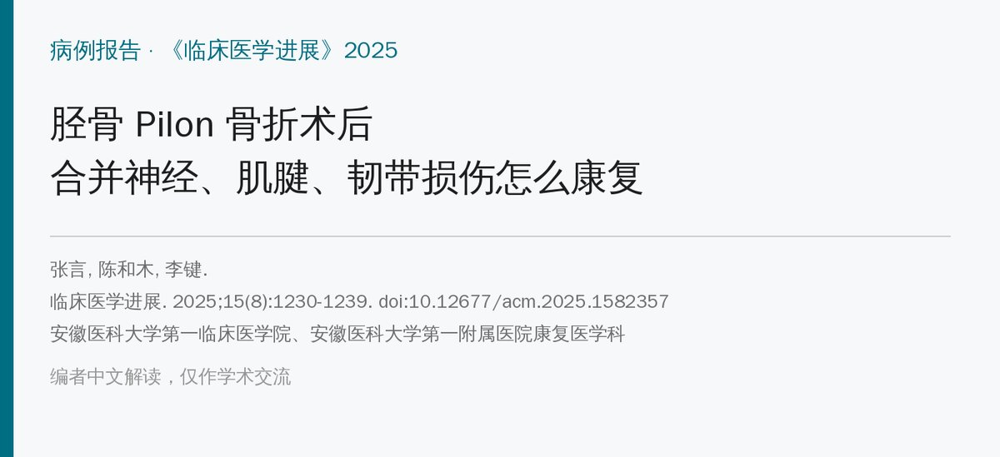
🔖原文信息（编者重排）
📚 文献信息
▪ 张言, 陈和木, 李键. 胫骨 Pilon 骨折术后康复治疗 1 例[J]. 临床医学进展, 2025, 15(8): 1230-1239. doi:10.12677/acm.2025.1582357
▪ 作者单位：安徽医科大学第一临床医学院、安徽医科大学第一附属医院康复医学科
▪ 文章类型：病例报告（1 例，随访至术后约 2 个月）
• 47 岁男性左侧 Pilon 骨折，同时合并腓总神经（及胫神经）损伤、胫后肌腱部分断裂和踝周多条韧带损伤
• 术后 48 小时床旁康复介入，按第 1 周、第 2 周、第 3～4 周分阶段推进，消肿、神经、肌力、活动度、日常生活能力几条线同时做
• 负重推迟到术后 8 周，从体重的 10%～20% 开始，12 周内不超过 50%
• 术后约 2 个月：疼痛 4 → 1 分，Barthel 60 → 90 分，基本自理；但踝关节仍僵硬、肌力仅 1 级，AOFAS 只有 47 分
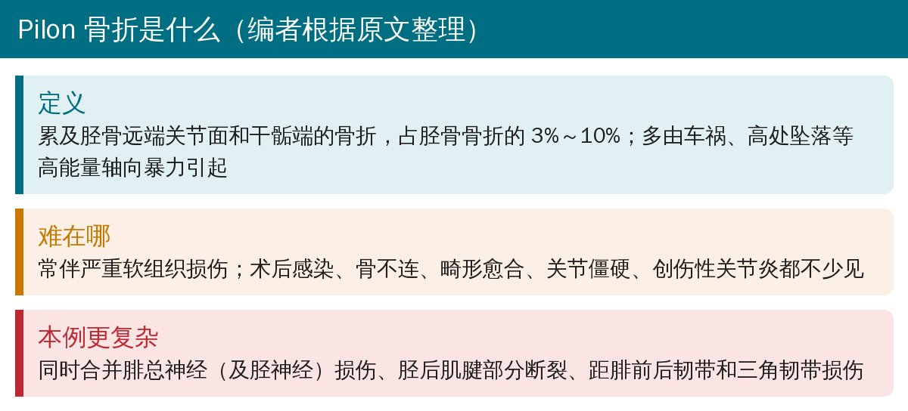
🔖Pilon 骨折简介（编者根据原文整理）
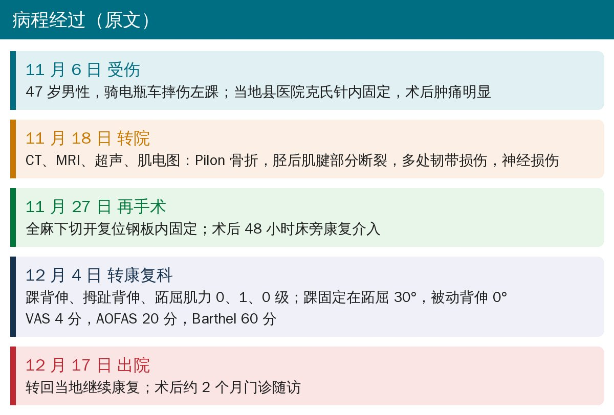
🔖病程经过（据原文整理）
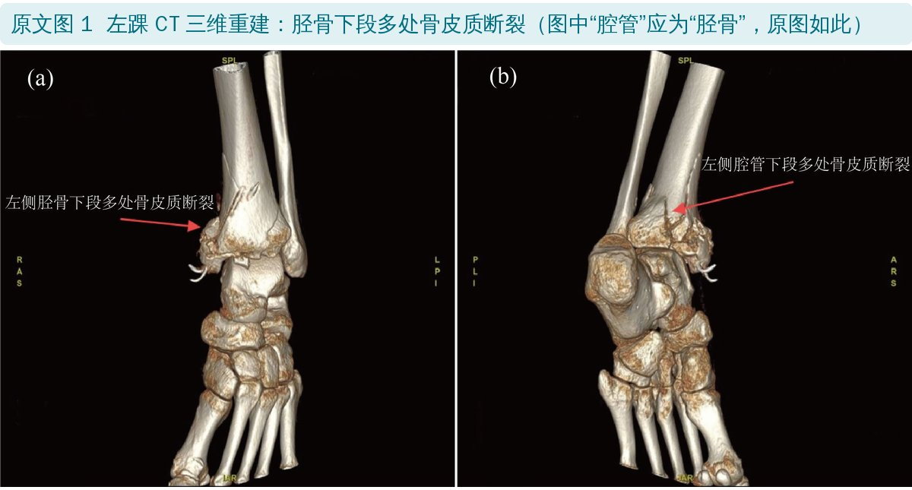
🔖原文图 1：CT 三维重建
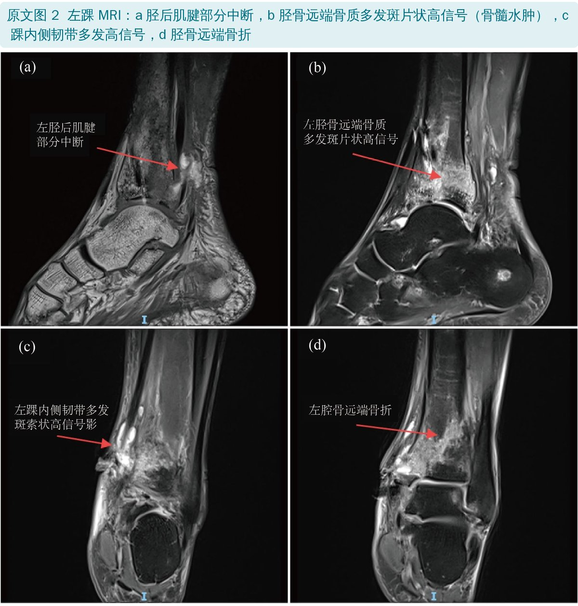
🔖原文图 2：MRI
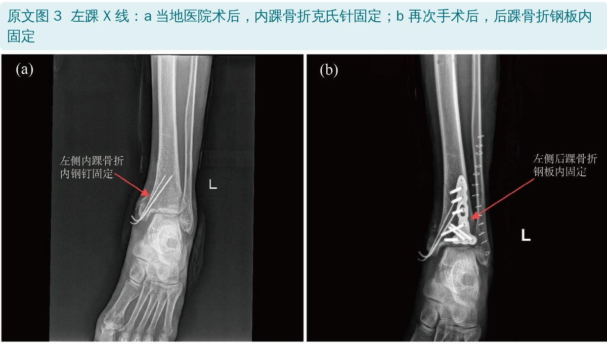
🔖原文图 3：两次手术后的 X 线
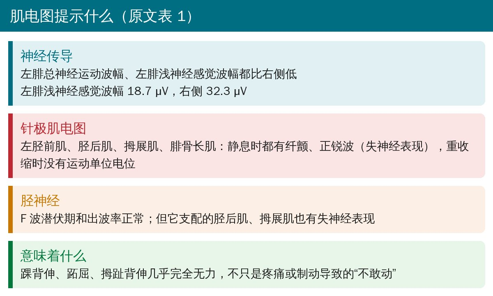
🔖肌电图要点（据原文表 1 整理）
原文表 1：神经传导关键数据（左／右）
| 项目 | 左侧 | 右侧 |
|---|---|---|
| 腓总神经运动波幅（踝，mV） | 4.80 | 9.69 |
| 腓总神经运动波幅（腓骨小头上，mV） | 9.14 | 13.20 |
| 腓浅神经感觉波幅（μV） | 18.7 | 32.3 |
| 针极肌电图（胫前肌、胫后肌、拇展肌、腓骨长肌） | 纤颤、正锐波，重收缩无运动单位电位 | — |
转康复科时，左踝背伸、拇趾背伸、跖屈肌力分别只有 0、1、0 级，踝关节停在跖屈 30°，被动背伸 0°，内外翻 0°。肌电图说明这不只是疼痛或制动造成的“不敢动”，而是神经损伤导致的肌肉失神经。
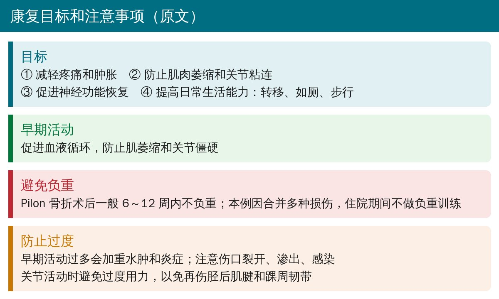
🔖康复目标和注意事项（原文）
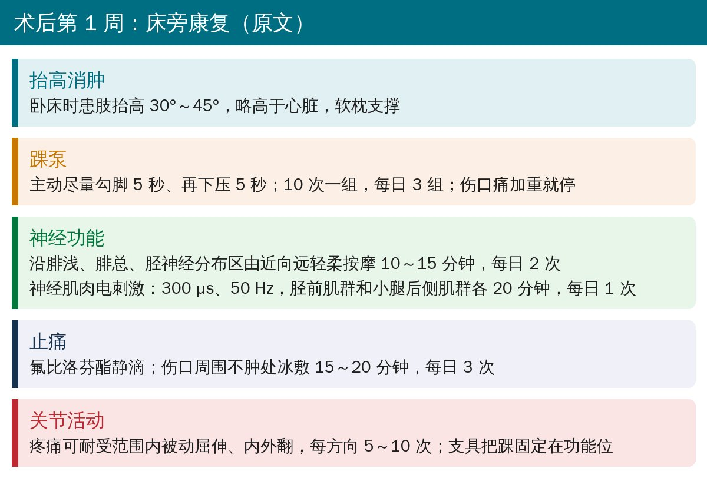
🔖术后第 1 周（原文）
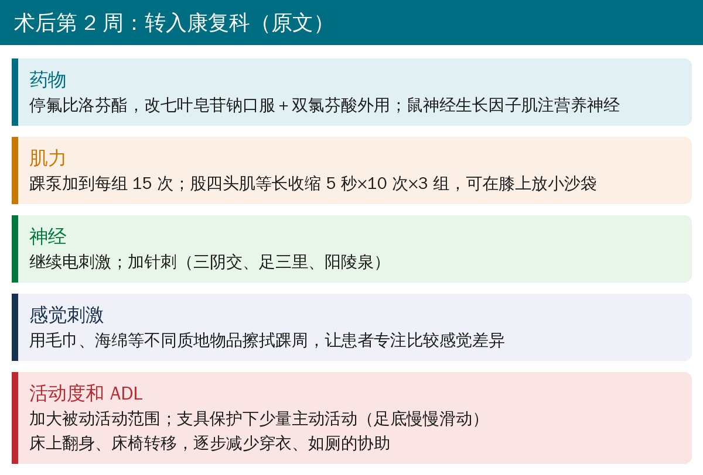
🔖术后第 2 周（原文）
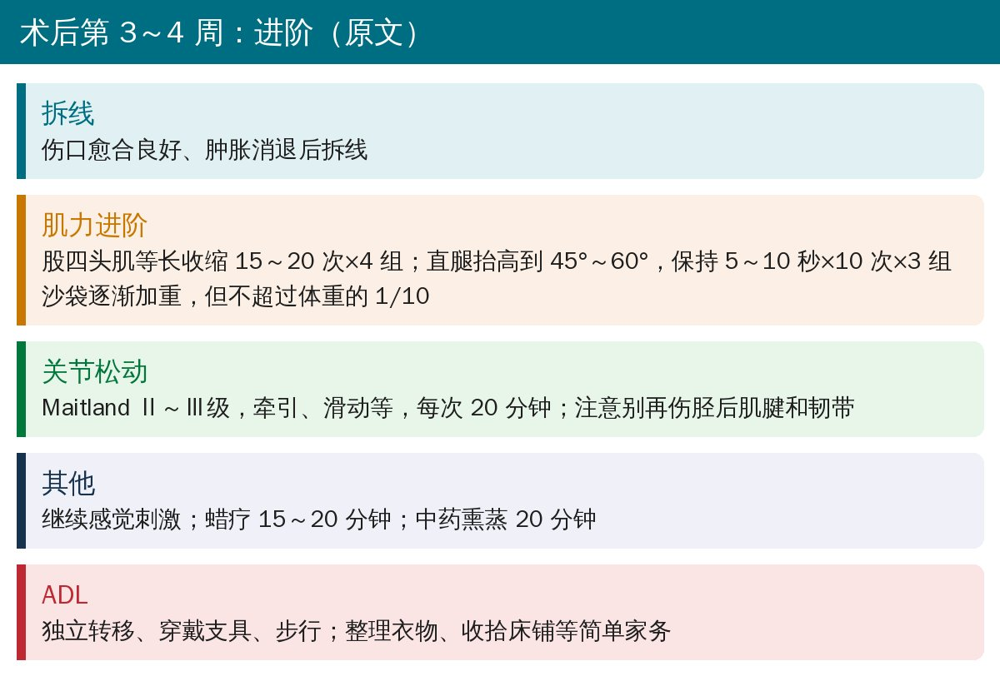
🔖术后第 3～4 周（原文）
作者特别提到：由于骨折合并神经、肌腱和韧带损伤，住院期间没有做负重训练；关节松动时也要留意胫后肌腱和韧带，避免二次损伤导致日后踝关节不稳。
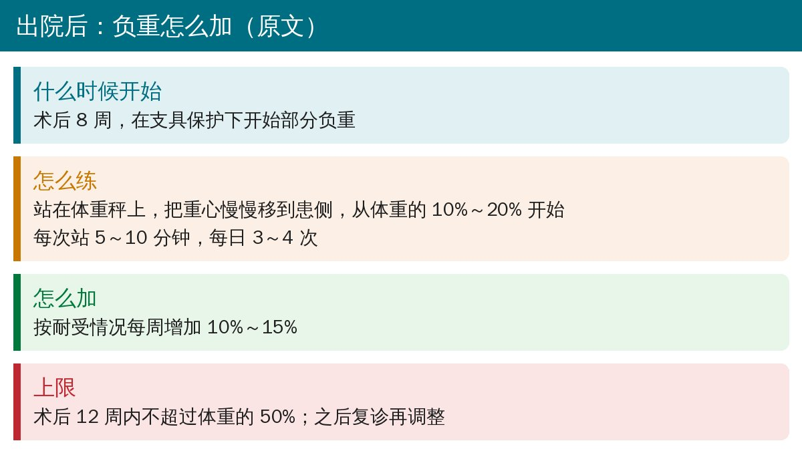
🔖出院后的负重进阶（原文）
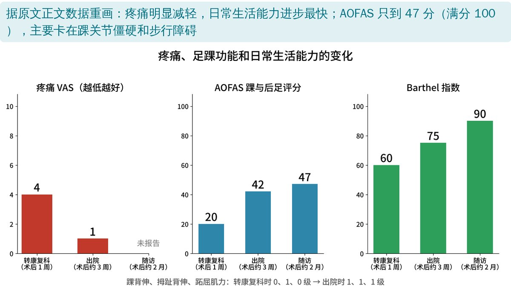
🔖评分变化（据原文数据重画）
术后约 2 个月，患者基础日常生活基本自理，但平地行走和上下楼仍需部分协助。作者认为 AOFAS 不理想主要是踝关节僵硬和步行障碍，与 Pilon 骨折本身难以恢复正常活动度、以及合并多重损伤有关，活动度和步行能力的改善可能需要 1 年甚至更久，因此也对患者做了预期管理。
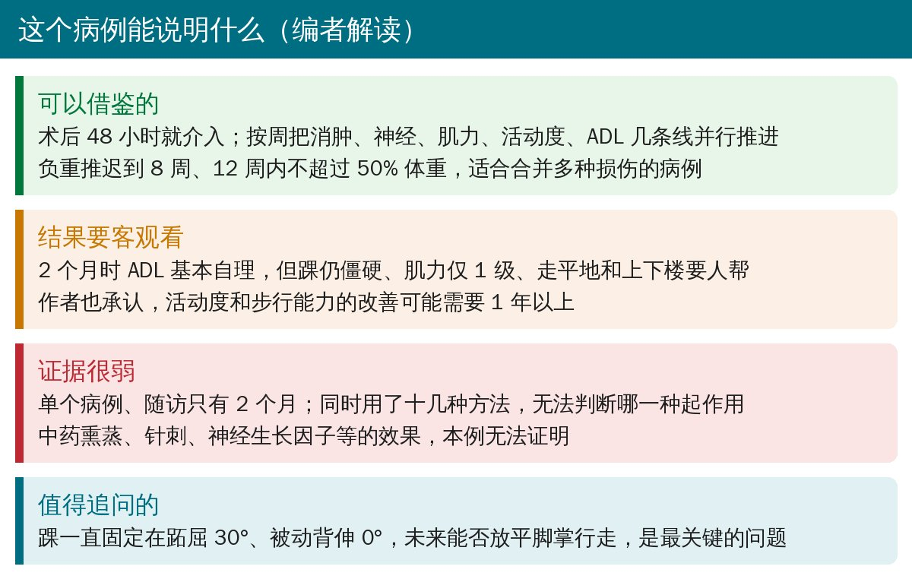
🔖编者解读
• 单个病例、随访只有约 2 个月，没有长期结果
• 同时使用了运动治疗、电刺激、针刺、蜡疗、中药熏蒸、神经生长因子等十几种方法，无法判断各自的作用
• 优点：检查资料齐全（CT、MRI、超声、肌电图），每周的训练参数写得很具体，便于参考
• 摘要中肌力写成“0-10 级”，正文为 0-1-0 级
• 病例中写“不伴有血管损伤”，讨论又说本例“合并神经、血管、肌腱等损伤”
• 正文说“经过 3 周的康复治疗”，实际 12 月 4 日转入、12 月 17 日出院，约 2 周
• Pilon 骨折术后肌力异常低下时，别只当成疼痛或制动，要想到神经损伤，必要时查肌电图
• 早期以消肿、踝泵、被动活动、电刺激为主，支具保持踝关节功能位，防止跖屈挛缩
• 合并肌腱、韧带损伤时，关节松动和活动度训练要温和渐进，负重可推迟到 8 周、12 周内不超过 50% 体重
• 提前和患者沟通预期：日常自理可能较快，踝关节活动度和步行能力的恢复可能需要 1 年以上
欢迎关注骨科康复小黄公众号，获取更多物理治疗的专业知识！
📄参考文献：
张言, 陈和木, 李键. 胫骨 Pilon 骨折术后康复治疗 1 例[J]. 临床医学进展, 2025, 15(8): 1230-1239. doi:10.12677/acm.2025.1582357
原文以知识共享署名 4.0（CC BY 4.0）协议开放获取。原文图 1～3 引自原文，图中中文标注为原文自带；评分图由编者根据原文数据重画；整理卡为编者根据原文撰写。